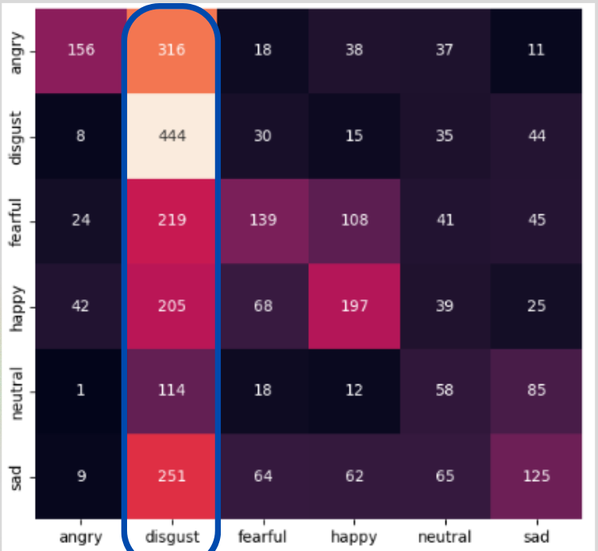

CREMA-D
Original Accuracy: 94.69%
↓Leakage-free Accuracy: 63%
Accuracy Drop：−31.69 percentage points
Speech Emotion Recognition / MFCC / 1D CNN
本專題以論文 Speech Emotion Recognition Based on 1D CNN and MFCC 為基礎，重現 MFCC 搭配 1D CNN 的情緒分類方法，並進一步比較不同 MFCC 設定、leakage-free evaluation 與 cross-dataset experiments，分析模型真正的泛化能力。
Paper Reproduction
依照原論文建立資料前處理、MFCC 特徵擷取、1D CNN 訓練與評估流程，並在 CREMA-D 與 RAVDESS 上重現實驗結果。
 Overall Pipeline
Overall Pipeline
Baseline Results
| Dataset | 原論文 Accuracy | 我的 Accuracy | 原論文 Macro F1 | 我的 Macro F1 |
|---|---|---|---|---|
| CREMA-D | 94.69% | 約 95% | 0.95 | 0.95 |
| RAVDESS | 97.33% | 約 93% | 0.97 | 0.92 |
Baseline reproduction 顯示模型可以重現接近原論文的結果，但這還不能直接代表模型具備真正的泛化能力。
Discussion 1
Original Evaluation Setup
原論文先對完整語音資料進行 Noise Addition 與 Pitch Shifting，再將擴增後資料以 8:2 切分為 Train / Test。
因為 augmentation 發生在資料切分之前，同一原始 utterance 的不同衍生版本可能同時出現在 Train 與 Test 中，模型可能間接看過與測試樣本高度相似的語音。
Reference Evaluation Practice
我進一步參考其他 Speech Emotion Recognition 研究常見的 speaker-independent / utterance-independent evaluation，將原始 utterances 先分到不同 split，再只對 training data 做 augmentation。
My Redesigned Evaluation
核心原則是先切分，再增強。所有原始 utterances 先被分配到 Train / Test，接著只對 Training Set 做 augmentation，確保測試資料與訓練資料在 utterance level 上彼此獨立。
Re-evaluation Results
Original Accuracy: 94.69%
↓Leakage-free Accuracy: 63%
Original Accuracy: 97.33%
↓Leakage-free Accuracy: 72%
Interpretation
原本高 Accuracy 可能部分受到資料切分與 augmentation leakage 影響。
重新切分後，模型在 unseen speech 上的表現明顯下降，顯示泛化能力較原始 evaluation 弱。
SER 的結果不只受模型架構影響，資料切分與 augmentation policy 也會直接影響最終表現。
當資料切分方式改為 leakage-free 後，模型表現明顯下降，顯示原本的高分不一定代表對真正 unseen speech 具有同等泛化能力。
Discussion 2
分析不同 MFCC 與前處理參數對 CREMA-D / RAVDESS 的影響。
| Ablation | CREMA-D | RAVDESS | 主要觀察 |
|---|---|---|---|
| MFCC Dimension | 13：0.93 20：0.95 Best 40：0.94 | 13：0.91 20：0.93 40：0.94 Best | 維度不是越高越好，最佳設定會依 Dataset 不同。 |
| Hop Length | 256：0.96 Best 512：0.95 1024：0.90 | 256：0.81 512：0.95 Best 1024：0.71 | Hop 過大會降低時間解析度，但過小也不一定最適合所有資料集。 |
| FFT Size | 1024：0.90 2048：0.95 4096：0.96 Best | 1024：0.92 2048：0.93 Best 4096：0.91 | 更高頻率解析度不代表一定能持續提升辨識效果。 |
| Pre-emphasis | On / Off 差異小，約 0.95 | 關閉後降至約 0.83 | RAVDESS 對 Pre-emphasis 較敏感。 |
| Delta Feature | 與 baseline 接近，約 0.94 | 加入後降至約 0.85 | 額外動態特徵不一定有幫助，甚至可能增加冗餘。 |
CREMA-D Best: 20 / 0.95
RAVDESS Best: 40 / 0.94
維度不是越高越好。CREMA-D Best: 256 / 0.96
RAVDESS Best: 512 / 0.95
時間解析度存在 dataset trade-off。CREMA-D Best: 4096 / 0.96
RAVDESS Best: 2048 / 0.93
更高頻率解析度不一定持續提升。CREMA-D: On / Off 差異小，約 0.95
RAVDESS: 關閉後約 0.83
RAVDESS 對 Pre-emphasis 較敏感。CREMA-D: 約 0.94
RAVDESS: 約 0.85
額外動態特徵可能增加冗餘。CREMA-D 與 RAVDESS 對 MFCC Dimension、Hop Length、FFT Size 的最佳設定不同，顯示聲學前處理需要依 Dataset 特性調整。
增加 MFCC 維度、FFT Size 或 Delta Feature 並不一定提升表現，有時甚至會加入冗餘資訊。
Hop Length 與 FFT Size 都存在 Dataset-dependent trade-off，不能單純追求更細的時間解析度或更高的頻率解析度。
MFCC 與聲學前處理參數的最佳設定具有明顯 Dataset Dependency，因此模型表現不只取決於網路架構，也受到特徵設計影響。
Discussion 3
分析模型在不同語音資料域下的泛化限制。
Cross-Dataset Experiment
35%
Cross-Dataset Accuracy同一模型在單一 Dataset 內可取得高辨識率，但直接跨 Dataset 測試時 Accuracy 降至 35%，顯示模型學到的聲學特徵具有明顯 Dataset Dependency。
Confusion Matrix
跨資料集後，部分 Emotion 類別出現明顯混淆，表示不同資料域中的聲學表現並不一致。

Cross-Dataset Confusion MatrixWhy Does the Domain Gap Happen?
不同 Dataset 的錄音設備、背景環境與音訊品質不同，造成輸入訊號分布差異。
不同說話者與資料收集方式，對相同 Emotion 的聲學表現可能不一致。
前面的 MFCC Ablation 顯示，不同 Dataset 對 MFCC Dimension、Hop Length、FFT Size 等設定的敏感度不同。
不同 Emotion 的樣本數與類別分布不同，也可能造成模型 prediction bias。
模型在單一資料集內的高 Accuracy，無法直接代表對 unseen speech domain 具有相同的泛化能力。
Cross-dataset experiment 顯示，Dataset Domain 本身是影響 Speech Emotion Recognition 的重要因素。
Key Findings
重現接近論文的 Accuracy，不代表模型真的能泛化到 unseen speech。
資料切分方式可能大幅影響最終結果。
模型表現不只受到模型架構影響，也受到語料特徵與 Dataset Domain 影響。
What I Learned
從論文描述自行建立資料處理、特徵擷取、訓練與評估流程。
透過 leakage-free evaluation 與 ablation study 檢查實驗設定是否合理。
透過 cross-dataset experiment 發現單一資料集高 Accuracy 與真正泛化能力之間的差異。
透過論文重現與後續實驗，我更理解模型效能不只取決於架構，資料切分、聲學特徵設定與 Dataset Domain 都可能大幅影響結果。
GitHub
完整資料處理、訓練、ablation 與 cross-dataset experiment 程式碼整理於 GitHub repository。